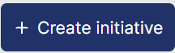
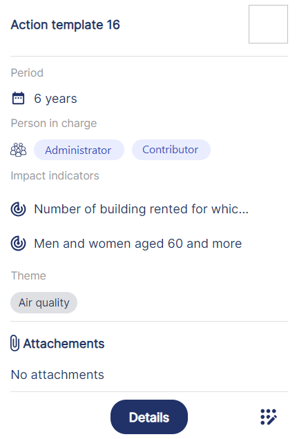

Library of Initiatives
 Related "Appendices" documentations
Related "Appendices" documentations
SEARCH TIP Press CTRL + F (Windows and Linux) or CMD + F (Mac) to search within this page.
To access this screen, click: Strategy > Monitoring of strategies > Library of initiatives.
Some actions, such as screen access, are permitted only for authorized users, that is, users with the appropriate profile. In other words, if the user does not have the right profile, the user cannot perform the action.
To configure this security (also called user rights), complete the following steps:
-
Define the profiles in the Profile Management screen.
-
Define users and attach one or more profiles to them in the User Management screen.
-
Assign user rights to the desired profiles in the Profile Matrix screen.
The table below contains screen actions that are related to user rights:
| Module | Screen | Action |
|---|---|---|
|
Monitoring of strategies |
Library of initiatives |
Screen access |
|
Create initiative |
||
|
Edit initiative |
||
|
Delete initiative |
Introduction
The Library of initiatives is a knowledge base in which you can collect good ideas or good practices to implement in your organization in order to achieve the set targets.
The actions implemented in the company are anonymized, then integrated into the Library of initiatives, in order to contribute to the sharing of good practices. Any action marked as private will not be referenced in the Library of initiatives.
NOTE To create actions, and mark them as private or non-private, see the documentation on the Action Reports.
In this screen, you can:
-
Search for an initiative
-
Create, edit or delete initiatives
-
Turn an initiative into an action within a strategy
-
Import or export initiatives
-
Stake
-
For each stake, one or multiple Target level 1
-
For each target level 1, one or multiple Target level 2
-
For each target level 2, one or multiple Action
For more information, see the documentation on the Strategy Deployment.
Create an Initiative
To create an initiative:
-
Click the

button.The Create new initiative pop-up panel appears.
-
Enter the initiative label in all languages available in the CSR Insight application.
-
Enter the initiative duration.
NOTE The period is expressed in years.
For example, if you want to create an initiative that will last 10 years, enter 10 in the Duration field. -
Select the Theme.
-
Optional: You can do the following actions:
-
Select the Person in charge of the initiative
-
Bind the initiative to an indicator
TIP If you know the name of your indicator, but do not remember where it is located, select All from the Chapter, Theme and/or Section drop-down menus:
-
If all chapters are selected, all themes are displayed.
-
If all themes are selected, all sections are displayed.
-
If a chapter is selected, all indicators included in this chapter are displayed.
-
If a theme is selected, all indicators included in this theme are displayed.
-
If a section is selected, all indicators included in this section are displayed.
-
-
Add an attachment
-
Enter the description in all available languages
-
Add an icon.
-
-
Click Create.
An initiative card is created.

NOTE To view the initiative description, click the button in the initiative card. To close the description, click the button.
Edit or Delete an Initiative
NOTE Only authorized users can edit or delete an initiative. See the Security Notes above.
To edit an initiative:
-
Click the
 button in the initiative card you want to edit.
button in the initiative card you want to edit. -
Edit the information as desired.
-
Click Edit.
The initiative is edited.
To delete an initiative:
-
To enable the delete function, click the
 button at the top right of the screen.
button at the top right of the screen. -
Select the
 box of one or multiple initiatives you want to delete.
box of one or multiple initiatives you want to delete. -
Click the
 button that appears at the bottom of the screen.
button that appears at the bottom of the screen.The Delete initiatives pop-up windows appears to confirm your deletion.
-
Click OK.
The selected initiatives are deleted.
To disable the delete function, click the  button at the top right of the screen.
button at the top right of the screen.
Search for an Initiative
To search for an initiative, enter at least two letters in the search box, and/or select the Indicator, Theme or Duration filters.
As you type, or after selecting a filter, the initiative list changes.
Turn an Initiative into an Action
There are three ways to turn an initiative into an action:
-
Through this screen
-
Through the Strategy Deployment screen
-
Throught the Action Reports screen
For the first way, see below.
NOTE To turn an initiative into action through this screen, you must do some upstream work. In the Strategy Deployment screen, find the strategy, the stake, the target level 1, and the target level 2, to which you want to attach the action. If the chosen strategy and stake do not contain a target level 1 and a target level 2, create them through the Strategy Deployment screen.
To turn an initiative into an action:
-
Click the button in the card of the initiative you want to turn into an action.
The button becomes the button.
-
Click the button.
The Associate action pop-up panel appears.
-
Select the Strategy, the Stake, the Target level 1 and the Target level 2 from the drop-down menus.
The Create new action pop-up panel appears.
-
Go to the Action Reports documentation.
-
Follow the When the Action is attached to a Strategy and a Target procedure written in the Create an Action section.
Your new action appears in the Action Reports screen and in the Strategy Deployment screen.
Import or Export an Initiative
To export initiatives:
-
Hover over the button at the top right of the screen.
-
Click Export initiatives.
The Scripts pop-up window appears with a download link.
-
Click the download link for the Excel file.
To import initiatives:
-
Export the initiatives as mentioned above.
-
Open the exported Excel file.
-
Fill in the Excel template, then save your data.
NOTE To help you fill in the Excel template, see the Fill In the Excel template appendix.
-
Back to the CSR Insight application, hover over the button at the top right of the screen.
-
Click Import initiatives.
The Scripts pop-up windows appears.
-
Choose a file.
-
Click OK.